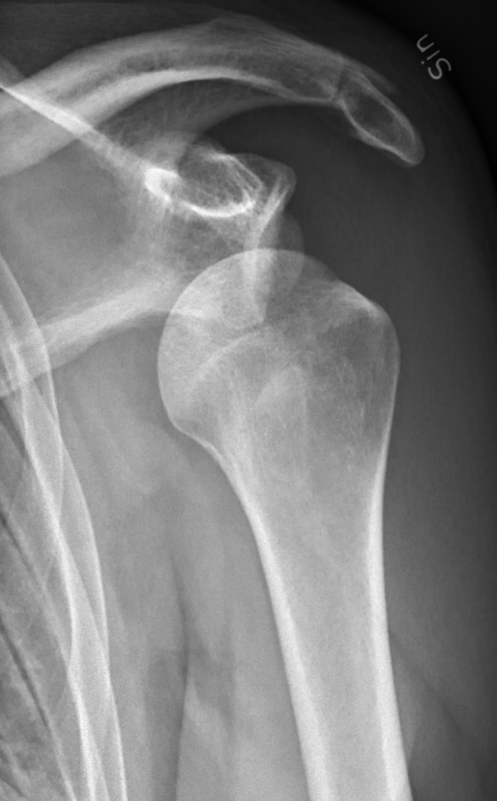
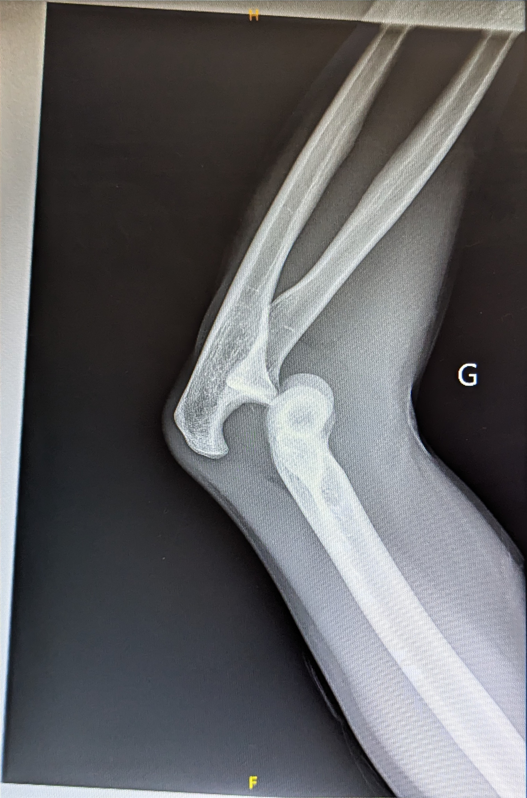
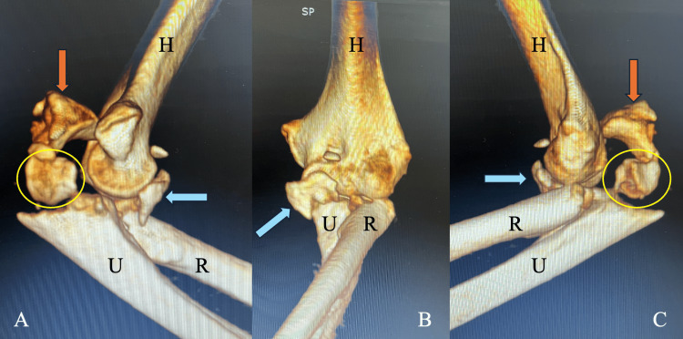
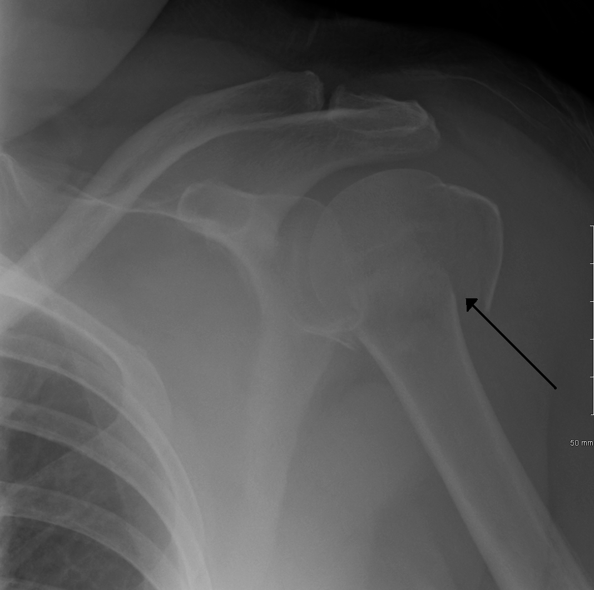
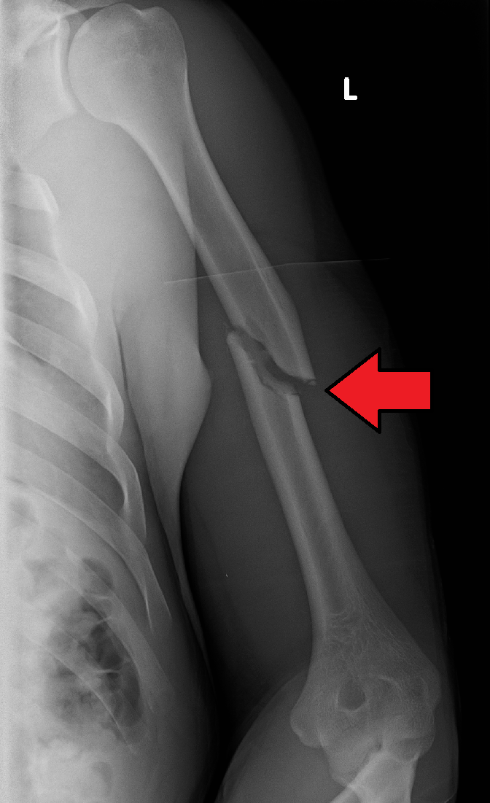
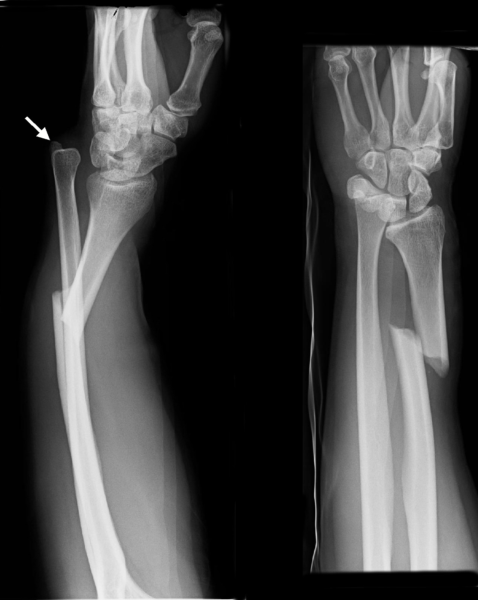
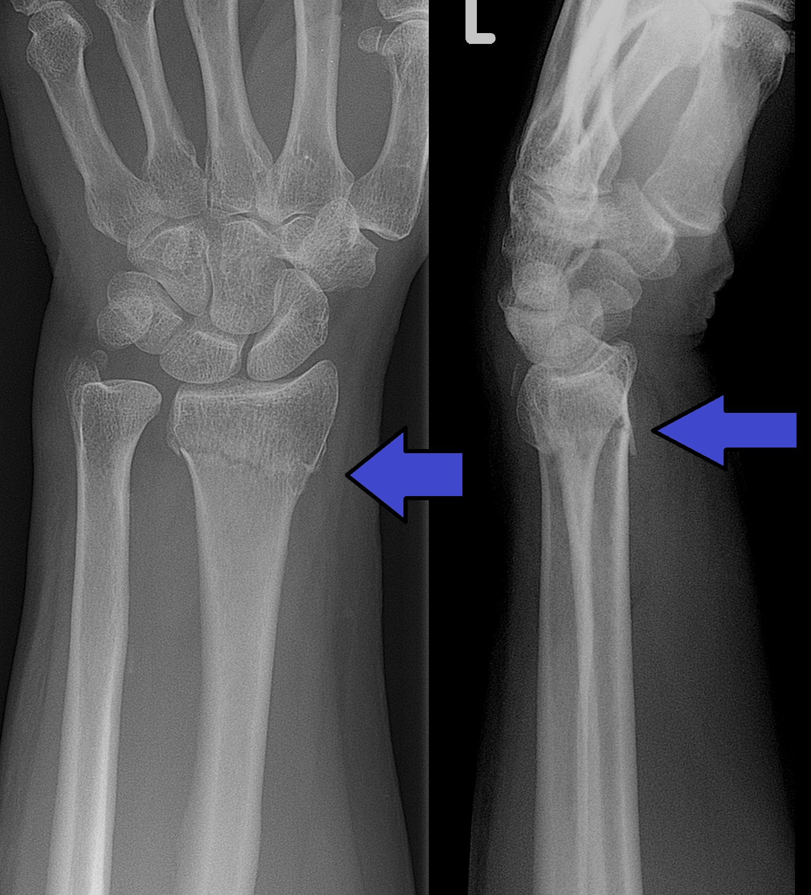

预计学习Estimated learning time · 60 分钟min

注：本病例为合成教学病例，非真实患者。Note: synthetic teaching case, not a real patient.
28 岁男性，篮球争抢篮板后右肩剧痛，不敢活动。点击按钮逐步揭晓诊疗思路。A 28-year-old man has severe right shoulder pain and refuses to move it after contesting a rebound. Reveal the workup step by step.
Q1. 肩关节前脱位复位后，最关键的即刻复查是什么？Q1. What is the most important immediate recheck after reducing an anterior shoulder dislocation?
Q2. 同一患者 X 线若同时显示大结节骨折块明显移位，处理策略应如何调整？Q2. If the same patient's radiograph also shows a markedly displaced greater tuberosity fragment, how should management change?
注：“来源（已核验）”仅指该网页于访问日期可正常打开、标题与定位描述相符；不构成对本课程每条医学表述的逐条医学审核。临床决策请结合最新指南与本院流程。Note: "Source (verified)" means only that the page was accessible on the access date and that its title and scope description match; it does not constitute item-by-item medical review of every statement in this course. Base clinical decisions on current guidelines and local protocols.
来源 1（已核验）Source 1 (verified)
Extraarticular 3-part, surgical neck and tuberosity, dislocation — definition
定位：肱骨近端骨折脱位定义页（AO Surgery Reference，成人创伤模块）；支撑本单元“骨折脱位”部分的分类与 AO 原则适用性。Scope: proximal humerus fracture-dislocation definition page (AO Surgery Reference, adult trauma); supports the fracture-dislocation classification and AO-principles sections of this unit.
访问日期：2026-10-04Accessed: 2026-10-04
来源 2（已核验 · AAOS，非 AO）Source 2 (verified · AAOS, not AO)
Shoulder Dislocation - OrthoInfo - AAOS
定位：美国骨科医师学会（AAOS）OrthoInfo 患者教育页面（由美国肩肘外科医师学会 ASES 成员撰写/审核）；涵盖肩关节解剖、前脱位最常见、电击/癫痫致后脱位、查体（神经血管）、影像（X 线确诊方向与骨折，CT/MRI 指征）与治疗（急诊镇静下轻柔闭合复位、悬吊制动、康复、手术指征）；支撑本单元“单纯脱位”章节。明确标注：AAOS 来源，非 AO Surgery Reference。Scope: American Academy of Orthopaedic Surgeons (AAOS) OrthoInfo patient-education page (written/reviewed by an American Shoulder and Elbow Surgeons member); covers shoulder anatomy, anterior dislocation most common, seizure/electric-shock posterior dislocation, examination (neurovascular), imaging (radiographs confirm direction and fracture; CT/MRI indications) and treatment (gentle closed reduction under sedation in the emergency setting, sling immobilisation, rehabilitation, surgical indications); supports this unit's "simple dislocation" sections. Clearly labelled: AAOS source, not AO Surgery Reference.
访问日期：2026-10-04Accessed: 2026-10-04
诚实标注：AO Surgery Reference 以骨折治疗为核心，未在其官方域名内找到“单纯肩关节脱位（无骨折）独立处理”页面；本单元“单纯脱位”章节改引 AAOS OrthoInfo 来源（来源 2，患者教育页面）。不可将 AO 骨折脱位页面的表述外推为单纯脱位的处理依据。Honesty note: AO Surgery Reference is fracture-treatment oriented; no standalone simple-shoulder-dislocation (no fracture) page exists on its domain, so this unit's "simple dislocation" sections cite the AAOS OrthoInfo source (Source 2, patient-education page) instead. Do not extrapolate AO fracture-dislocation statements to simple-dislocation management.
媒体许可：AO Surgery Reference 页面图片托管于 media.aofoundation.org，版权归 AO Foundation / 原作者所有，不可下载重传；本课程仅以外链形式引用原页面，未复制其任何图片。Media licence: images on AO Surgery Reference pages are hosted at media.aofoundation.org, © AO Foundation / original authors, not to be downloaded or re-hosted; this course links to the original pages only and reproduces none of their images.
本单元图片（图 1-1）：真实 X 线/CT，逐图核验许可；作者、原标题、原 URL、许可与原 caption 见 assets/media_sources.csv，各图注含原文件页与许可链接。各图为不同患者的独立图片，非同一病例序列。Unit images (Fig 1-1): real radiographs/CT, licences verified per image; author, original title, source URL, licence and original caption are listed in assets/media_sources.csv, and each caption links its file page and licence. Images are from different patients, not a case sequence.

注：本病例为合成教学病例，非真实患者。Note: synthetic teaching case, not a real patient.
45 岁女性，跌倒时右手撑地，右肘剧痛畸形。逐步揭晓。A 45-year-old woman fell onto her right outstretched hand; the right elbow is severely painful and deformed. Reveal step by step.
Q1. 肘关节脱位查体时，以下哪项属于必须排除的危重红旗？Q1. Which critical red flag must be excluded on examination of an elbow dislocation?
Q2. 关于“恐怖三联征”，正确的是？Q2. Which statement about the "terrible triad" is correct?
注：“来源（已核验）”仅指该网页于访问日期可正常打开、标题与定位描述相符；不构成对本课程每条医学表述的逐条医学审核。临床决策请结合最新指南与本院流程。Note: "Source (verified)" means only that the page was accessible on the access date and that its title and scope description match; it does not constitute item-by-item medical review of every statement in this course. Base clinical decisions on current guidelines and local protocols.
来源 1（已核验）Source 1 (verified)
Assessment of elbow stability
定位：肘关节稳定性评估（AO Surgery Reference，成人创伤模块）；明确区分 simple elbow dislocations 与 fracture-dislocations，含复位后稳定性检查流程；支撑本单元初评红旗与“单纯 vs 骨折脱位”鉴别。Scope: elbow stability assessment (AO Surgery Reference, adult trauma); distinguishes simple elbow dislocations from fracture-dislocations, with post-reduction stability testing; supports this unit's red-flag and simple-vs-fracture-dislocation sections.
访问日期：2026-10-04Accessed: 2026-10-04
来源 2（已核验 · AAOS，非 AO）Source 2 (verified · AAOS, not AO)
Elbow Dislocation - OrthoInfo - AAOS
定位：美国骨科医师学会（AAOS）OrthoInfo 患者教育页面（由美国肩肘外科医师学会 ASES 成员撰写/审核）；明确肘关节脱位为急症，即刻治疗目标是恢复关节正常对线，通常在急诊室镇静镇痛下轻柔复位；区分单纯脱位（无明显骨折）与复杂脱位（合并骨折）；涵盖神经血管查体与 X 线/CT 指征；支撑本单元“尽快专业评估与安全复位”及单纯/复杂脱位鉴别。明确标注：AAOS 来源，非 AO Surgery Reference。本条已替换 v2 中的儿童创伤来源（“不晚于 12 小时”阈值出自 pediatric-trauma 路径页面，不再用于成人课程）。Scope: American Academy of Orthopaedic Surgeons (AAOS) OrthoInfo patient-education page (written/reviewed by an American Shoulder and Elbow Surgeons member); states elbow dislocation is an emergency whose immediate treatment aims to restore normal alignment — usually reduced gently under sedation in the emergency department; distinguishes simple (no major bone injury) from complex (with fractures) dislocations; covers neurovascular examination and X-ray/CT indications; supports this unit's "prompt professional assessment and safe reduction" and simple/complex differentiation. Clearly labelled: AAOS source, not AO Surgery Reference. This entry replaces the v2 pediatric-trauma source (the "no later than 12 hours" threshold came from a pediatric-path page and is no longer used in this adult course).
访问日期：2026-10-04Accessed: 2026-10-04
来源 4（已核验 · 原始研究）Source 4 (verified · original study)
Can we treat select terrible triad injuries nonoperatively?
定位：Chan 等，Clin Orthop Relat Res 2014；2006–2012 年回顾性小系列，12 例恐怖三联征保守治疗（11 例随访 ≥12 个月）。保守的严格筛选标准：同心圆复位、桡骨头骨折不造成旋转的机械性阻挡、冠状突小骨折（Regan–Morrey Ⅰ/Ⅱ型）、伤后 10 天内能在稳定活动弧内主动活动、密切的临床与影像随访；Level IV。病例 2-1 的保守决策即依据此标准，并强调其为例外、不可仅凭数字自动套用。Scope: Chan et al., Clin Orthop Relat Res 2014; retrospective small series of 12 terrible triad injuries managed non-operatively 2006–2012 (11 followed ≥12 months). Strict selection criteria: concentric reduction, radial head fracture not causing a mechanical block to rotation, small coronoid fracture (Regan–Morrey type 1/2), a stable arc of motion permitting active motion within 10 days, and close clinical and radiographic follow-up; Level IV. Case 2-1's non-operative decision follows these criteria, presented as an exception — not an automatic rule from numbers alone.
访问日期：2026-10-04Accessed: 2026-10-04
媒体许可：AO Surgery Reference 页面图片托管于 media.aofoundation.org，版权归 AO Foundation / 原作者所有，不可下载重传；本课程仅以外链形式引用原页面，未复制其任何图片。Media licence: images on AO Surgery Reference pages are hosted at media.aofoundation.org, © AO Foundation / original authors, not to be downloaded or re-hosted; this course links to the original pages only and reproduces none of their images.
本单元图片（图 2-1、图 2-2）：真实 X 线/CT，逐图核验许可；作者、原标题、原 URL、许可与原 caption 见 assets/media_sources.csv，各图注含原文件页与许可链接。各图为不同患者的独立图片，非同一病例序列。Unit images (Figs 2-1, 2-2): real radiographs/CT, licences verified per image; author, original title, source URL, licence and original caption are listed in assets/media_sources.csv, and each caption links its file page and licence. Images are from different patients, not a case sequence.

注：本病例为合成教学病例，非真实患者。Note: synthetic teaching case, not a real patient.
60 岁男性，车祸致左上臂剧痛、畸形。逐步揭晓。A 60-year-old man has severe left upper-arm pain and deformity after a road traffic crash. Reveal step by step.
Q1. 肱骨干骨折合并垂腕，最合适的初始处理是？Q1. What is the most appropriate initial management of a humeral shaft fracture with wrist drop?
Q2. 关于肱骨三个部位治疗逻辑，正确的是？Q2. Which statement about treatment logic across the three humeral regions is correct?
注：“来源（已核验）”仅指该网页于访问日期可正常打开、标题与定位描述相符；不构成对本课程每条医学表述的逐条医学审核。临床决策请结合最新指南与本院流程。Note: "Source (verified)" means only that the page was accessible on the access date and that its title and scope description match; it does not constitute item-by-item medical review of every statement in this course. Base clinical decisions on current guidelines and local protocols.
来源 1（已核验 · 近端）Source 1 (verified · proximal)
Extraarticular 3-part, surgical neck and tuberosity, dislocation — definition
定位：肱骨近端骨折脱位定义页（AO Surgery Reference，成人创伤模块）；支撑近端骨折的分类概念。Scope: proximal humerus fracture-dislocation definition page (AO Surgery Reference, adult trauma); supports proximal fracture classification concepts.
访问日期：2026-10-04Accessed: 2026-10-04
来源 2（已核验 · 骨干）Source 2 (verified · shaft)
12A1 Simple fracture, spiral — definition
定位：肱骨干螺旋形骨折定义页（AO Surgery Reference，成人创伤模块）；按近 / 中 / 远 1/3 分区，明确远 1/3 桡神经风险更高；支撑骨干分类与“桡神经红旗”。Scope: humeral shaft spiral fracture definition page (AO Surgery Reference, adult trauma); zones by proximal/middle/distal third, noting higher radial-nerve risk in the distal third; supports shaft classification and the radial-nerve red flag.
访问日期：2026-10-04Accessed: 2026-10-04
来源 3（已核验 · 远端）Source 3 (verified · distal)
Anatomical concepts (distal humerus)
定位：肱骨远端解剖概念页（AO Surgery Reference，成人创伤模块）；阐述内外侧柱三角稳定结构等解剖/生物力学概念，支撑“解剖与机制”。注意此为解剖页，非某型骨折的治疗页。Scope: distal humerus anatomical concepts page (AO Surgery Reference, adult trauma); covers the triangular columnar stability construct and related biomechanics; supports "Anatomy & Mechanism". Note: an anatomy page, not a fracture-subtype treatment page.
访问日期：2026-10-04Accessed: 2026-10-04
来源 4（已核验 · 解剖研究）Source 4 (verified · anatomic study)
Quantitative assessment of the vascularity of the proximal part of the humerus
定位：Hettrich 等，J Bone Joint Surg Am 2010；24 具尸体肩的定量研究：后旋肱动脉对肱骨头的灌注贡献大于既往认识，结论建议手术入路与固定时保护后旋肱动脉。课程仅引用其“后旋肱动脉贡献大于既往认识、应保护软组织附着”的结论，不把该研究的比例数字外推为所有患者的固定数值。Scope: Hettrich et al., J Bone Joint Surg Am 2010; quantitative study in 24 cadaver shoulders: the posterior humeral circumflex artery contributes more perfusion to the humeral head than previously described; the authors advise protecting it during approach and fixation. This course cites only the "posterior vessel matters more than previously thought; protect soft-tissue attachments" conclusion, without extrapolating the study's proportions to all patients.
访问日期：2026-10-04Accessed: 2026-10-04
诚实标注：肱骨远端各骨折亚型的具体术式 treatment 页面未逐页打开核验，本单元未引用任何具体术式页；治疗选择章节仅给原则性分层。Honesty note: subtype-specific operative treatment pages for distal humerus fractures were not individually opened and verified; this unit cites no specific operative technique pages, and the treatment section stays at the level of principles.
媒体许可：AO Surgery Reference 页面图片托管于 media.aofoundation.org，版权归 AO Foundation / 原作者所有，不可下载重传；本课程仅以外链形式引用原页面，未复制其任何图片。Media licence: images on AO Surgery Reference pages are hosted at media.aofoundation.org, © AO Foundation / original authors, not to be downloaded or re-hosted; this course links to the original pages only and reproduces none of their images.
本单元图片（图 3-1、图 3-2）：真实 X 线/CT，逐图核验许可；作者、原标题、原 URL、许可与原 caption 见 assets/media_sources.csv，各图注含原文件页与许可链接。各图为不同患者的独立图片，非同一病例序列。Unit images (Figs 3-1, 3-2): real radiographs/CT, licences verified per image; author, original title, source URL, licence and original caption are listed in assets/media_sources.csv, and each caption links its file page and licence. Images are from different patients, not a case sequence.

注：本病例为合成教学病例，非真实患者。Note: synthetic teaching case, not a real patient.
30 岁男性，跌倒后左前臂剧痛、畸形。逐步揭晓。A 30-year-old man has severe left forearm pain and deformity after a fall. Reveal step by step.
Q1. 前臂 X 线显示单纯尺骨干骨折，接下来的关键动作是？Q1. Forearm radiographs show an isolated ulnar shaft fracture. What is the key next step?
Q2. 桡骨远端骨折复位固定后，患者诉拇指、示指进行性麻木、胀痛加重，应首先考虑？Q2. After reduction and fixation of a distal radius fracture, the patient reports progressive thumb/index numbness and worsening swelling pain. First consideration?
注：“来源（已核验）”仅指该网页于访问日期可正常打开、标题与定位描述相符；不构成对本课程每条医学表述的逐条医学审核。临床决策请结合最新指南与本院流程。Note: "Source (verified)" means only that the page was accessible on the access date and that its title and scope description match; it does not constitute item-by-item medical review of every statement in this course. Base clinical decisions on current guidelines and local protocols.
来源 1（已核验 · Monteggia）Source 1 (verified · Monteggia)
Simple fracture of the ulna, with dislocation of proximal radioulnar joint (Monteggia)
定位：Monteggia 损伤治疗模块入口页（AO Surgery Reference，成人创伤模块，含诊断 → 适应证 → 治疗导航）；支撑“相邻关节受累”与 Monteggia 章节。子术式页未逐页点开。Scope: Monteggia injury treatment-module entry page (AO Surgery Reference, adult trauma, with diagnosis → indications → treatment navigation); supports the adjacent-joint and Monteggia sections. Sub-technique pages were not individually opened.
访问日期：2026-10-04Accessed: 2026-10-04
来源 2（已核验 · Galeazzi）Source 2 (verified · Galeazzi)
Simple fracture of the radius, with dislocation of distal radioulnar joint (Galeazzi)
定位：Galeazzi 损伤治疗模块入口页（AO Surgery Reference，成人创伤模块）；支撑 Galeazzi 章节与 DRUJ 稳定性评估。子术式页未逐页点开。Scope: Galeazzi injury treatment-module entry page (AO Surgery Reference, adult trauma); supports the Galeazzi section and DRUJ stability assessment. Sub-technique pages were not individually opened.
访问日期：2026-10-04Accessed: 2026-10-04
来源 3（已核验 · 桡骨远端）Source 3 (verified · distal radius)
ORIF - Palmar plate (partial articular fracture of the radius, involving the volar rim)
定位：桡骨远端掌侧缘部分关节内骨折的掌侧接骨板 ORIF 页（AO Surgery Reference，成人创伤模块）；含复位原则、DRUJ 稳定性测试方法、术后随访；支撑治疗选择与随访章节。Scope: palmar-plate ORIF page for partial-articular volar-rim distal radius fractures (AO Surgery Reference, adult trauma); covers reduction principles, DRUJ stability testing and post-operative follow-up; supports the treatment and follow-up sections.
访问日期：2026-10-04Accessed: 2026-10-04
来源 4（已核验 · Galeazzi DRUJ 处理）Source 4 (verified · Galeazzi DRUJ management)
DRUJ stabilization (Galeazzi fracture-dislocation)
定位：Galeazzi 损伤 DRUJ 稳定性处理基本技术页（AO Surgery Reference，成人创伤模块）；明确稳定性确认后建议以控制旋转的可拆卸支具制动 DRUJ 约 3 周以促进韧带愈合，术后制动取 DRUJ 最稳定的旋转体位，明显不稳定者克氏针临时固定 3–4 周并禁止旋转；支撑本单元 v2 康复修正（保护 DRUJ 韧带愈合、依稳定性限制旋转）。Scope: basic-technique page on DRUJ stabilisation in Galeazzi fracture-dislocation (AO Surgery Reference, adult trauma); once stability is assured, immobilise the DRUJ ~3 weeks in a rotation-controlling removable splint to allow ligament healing, splint in the most stable rotational position, and for gross instability use temporary K-wire transfixation for 3–4 weeks with rotation prohibited; supports this unit's v2 rehabilitation correction (protect DRUJ ligament healing; limit rotation by stability).
访问日期：2026-10-04Accessed: 2026-10-04
媒体许可：AO Surgery Reference 页面图片托管于 media.aofoundation.org，版权归 AO Foundation / 原作者所有，不可下载重传；本课程仅以外链形式引用原页面，未复制其任何图片。Media licence: images on AO Surgery Reference pages are hosted at media.aofoundation.org, © AO Foundation / original authors, not to be downloaded or re-hosted; this course links to the original pages only and reproduces none of their images.
本单元图片（图 4-1、图 4-2）：真实 X 线/CT，逐图核验许可；作者、原标题、原 URL、许可与原 caption 见 assets/media_sources.csv，各图注含原文件页与许可链接。各图为不同患者的独立图片，非同一病例序列。Unit images (Figs 4-1, 4-2): real radiographs/CT, licences verified per image; author, original title, source URL, licence and original caption are listed in assets/media_sources.csv, and each caption links its file page and licence. Images are from different patients, not a case sequence.